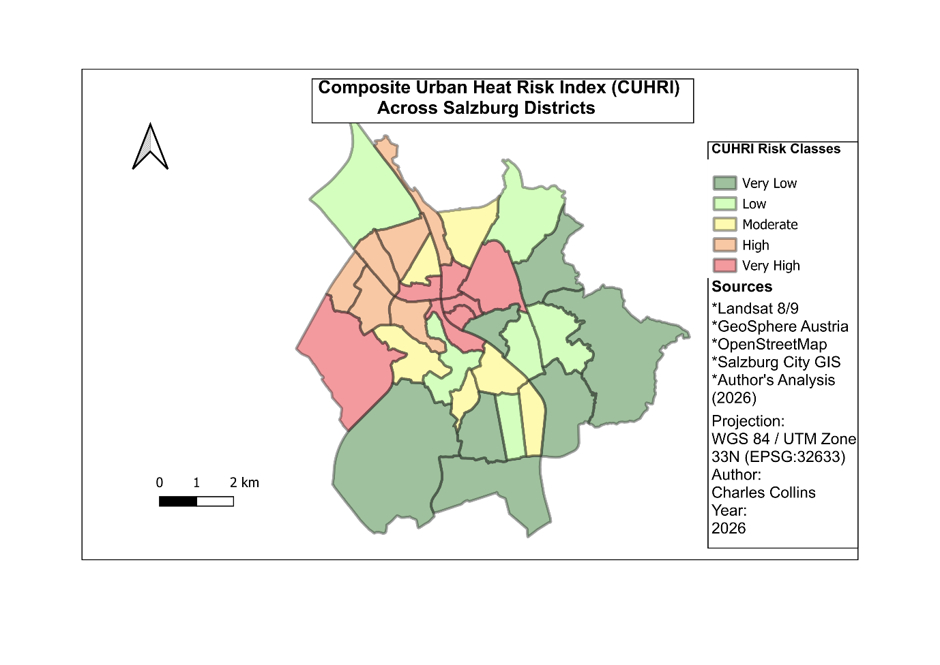

Featured Project
Urban Heat Risk and Cooling Accessibility in Salzburg
This project investigates urban heat risk across Salzburg by integrating satellite-derived heat exposure, demographic vulnerability, characteristics of the built environment and accessibility to green and blue cooling infrastructure.
Landsat imagery, climate information, population data, OpenStreetMap datasets and GIS-based network analysis were combined to develop a Composite Urban Heat Risk Index (CUHRI) for Salzburg's census districts.